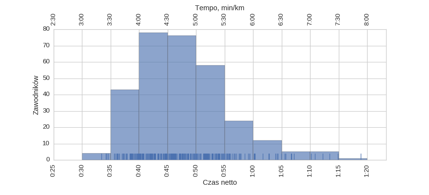
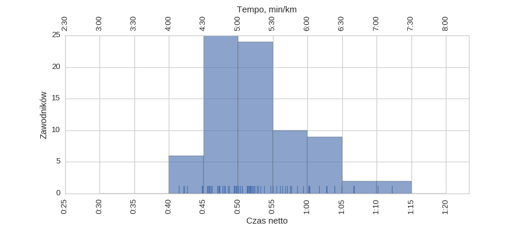
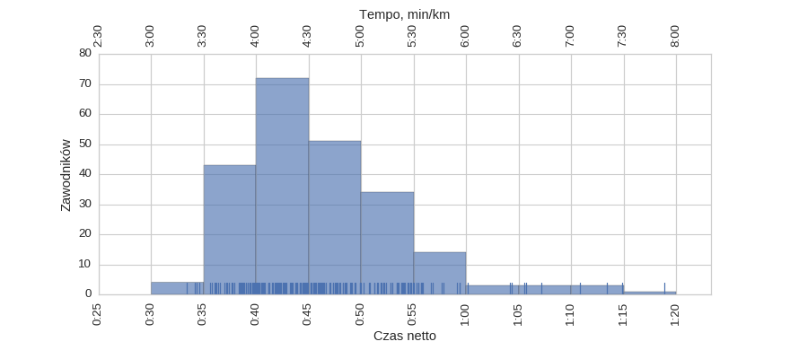
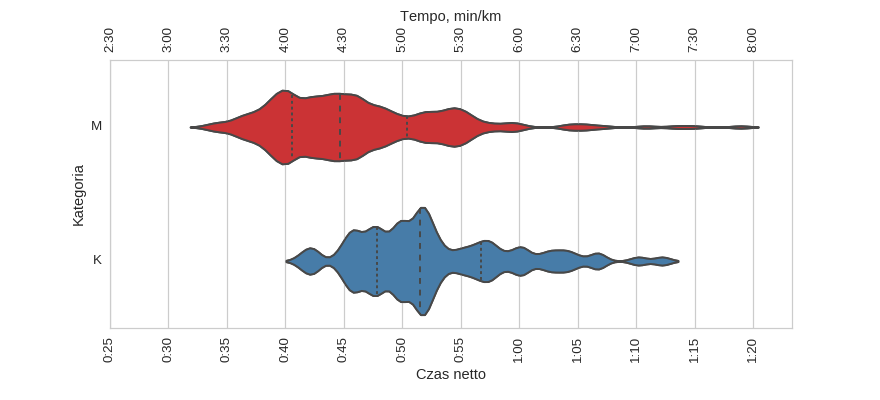
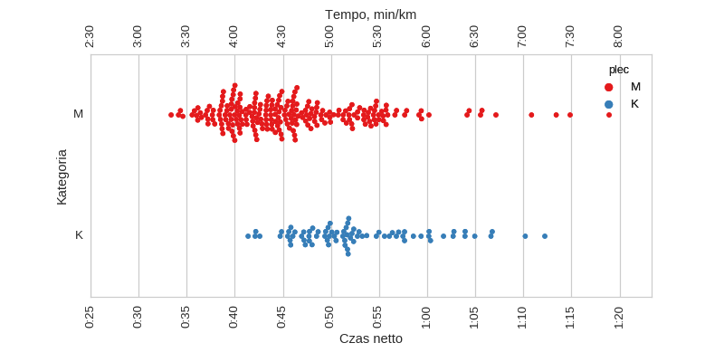

Statystyki biegowe
Statystyki biegoweGrand Prix Warszawy (2017-03-11)
Histogramy
Klasyfikacja generalna

| mean | std | min | 25% | 50% | 75% | max | |
|---|---|---|---|---|---|---|---|
| czas | 0:47:52 | 0:07:53 | 0:33:23 | 0:42:05 | 0:46:24 | 0:52:13 | 1:18:55 |
kobiety

| mean | std | min | 25% | 50% | 75% | max | |
|---|---|---|---|---|---|---|---|
| czas | 0:52:41 | 0:06:41 | 0:41:23 | 0:47:50 | 0:51:31 | 0:56:41 | 1:12:14 |
mężczyźni

| mean | std | min | 25% | 50% | 75% | max | |
|---|---|---|---|---|---|---|---|
| czas | 0:46:13 | 0:07:36 | 0:33:23 | 0:40:32 | 0:44:42 | 0:50:23 | 1:18:55 |
Wykresy rybkowe
wg płci


| czas_netto_s | count | |||||||
|---|---|---|---|---|---|---|---|---|
| mean | std | min | 25% | 50% | 75% | max | ||
| plec | ||||||||
| K | 0:52:41 | 0:06:41 | 0:41:23 | 0:47:50 | 0:51:31 | 0:56:41 | 1:12:14 | 78 |
| M | 0:46:13 | 0:07:36 | 0:33:23 | 0:40:32 | 0:44:42 | 0:50:23 | 1:18:55 | 228 |
Menu
HistogramyWykresy rybkowe
∙ wg płci
Dystans: 10.0 km
Liczba uczestników: 306
Wygenerowano: 2017-03-11 22:00:46.579897